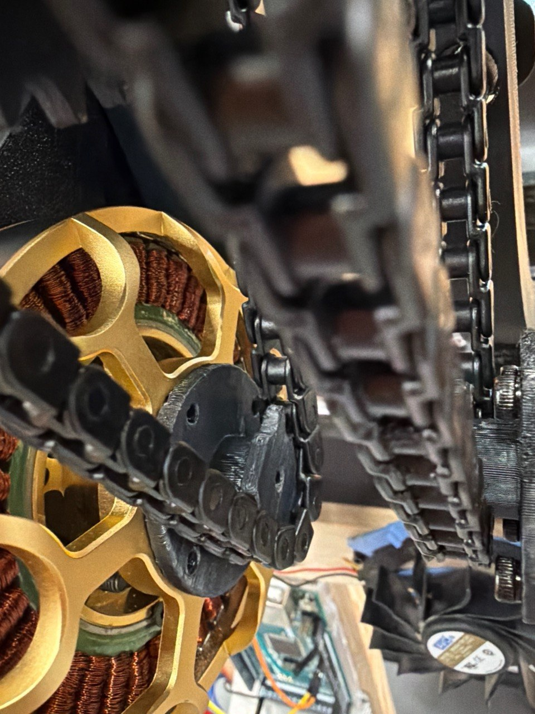
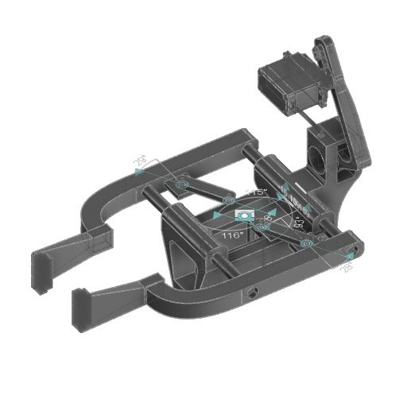
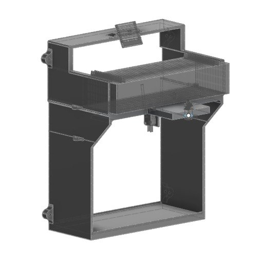

← All projects
Brushless motor and chain drive on the real build Gripper CAD: servo-driven linkage with its design angles Paper dispenser housing
Oct 2025 – Feb 2026
Resumé Arm
A self-designed machine with a robotic arm and a paper dispenser that hands out my resume. I iterated the mechanisms in CAD, wired it, coded the control system, and kept it within a $600 self-funded budget.
- Budget
- $600, self-funded
- Tools
- Fusion 360, 3D printing, C++
- Skills
- Rapid prototyping, mechanical interfaces
The problem
Placeholder: Ethan will write this part.
The build
Placeholder: Ethan will write this part.
What I learned
Placeholder: Ethan will write this part.
Gallery


